🦸 漫威电影宇宙
完整观影顺序 · 超级英雄档案 · 角色解析
🎬 漫威电影观看顺序（时间线版）
按剧情时间线排列，体验完整故事脉络
第一阶段 · 复仇者集结
 《美国队长1》（2011）· 二战起源故事
《美国队长1》（2011）· 二战起源故事 《惊奇队长》（2019）· 1995年故事
《惊奇队长》（2019）· 1995年故事 《钢铁侠》（2008）· MCU开山之作
《钢铁侠》（2008）· MCU开山之作 《钢铁侠2》（2010）· 黑寡妇首秀
《钢铁侠2》（2010）· 黑寡妇首秀 《雷神》（2011）· 阿斯加德王子
《雷神》（2011）· 阿斯加德王子 《复仇者联盟》（2012）· 初代六人集结
《复仇者联盟》（2012）· 初代六人集结
第二阶段 · 新世界开启
 《钢铁侠3》（2013）
《钢铁侠3》（2013） 《雷神2：黑暗世界》（2013）
《雷神2：黑暗世界》（2013） 《美国队长2：冬日战士》（2014）· 神盾局崩塌
《美国队长2：冬日战士》（2014）· 神盾局崩塌 《银河护卫队》（2014）· 星爵登场
《银河护卫队》（2014）· 星爵登场 《复仇者联盟2：奥创纪元》（2015）· 幻视诞生
《复仇者联盟2：奥创纪元》（2015）· 幻视诞生 《蚁人》（2015）· 量子领域初探
《蚁人》（2015）· 量子领域初探
第三阶段 · 无限传奇
 《美国队长3：内战》（2016）· 复仇者分裂
《美国队长3：内战》（2016）· 复仇者分裂 《奇异博士》（2016）· 魔法世界开启
《奇异博士》（2016）· 魔法世界开启 《银河护卫队2》（2017）
《银河护卫队2》（2017） 《蜘蛛侠：英雄归来》（2017）· 小蜘蛛加入MCU
《蜘蛛侠：英雄归来》（2017）· 小蜘蛛加入MCU 《雷神3：诸神黄昏》（2017）· 阿斯加德毁灭
《雷神3：诸神黄昏》（2017）· 阿斯加德毁灭 《黑豹》（2018）· 瓦坎达 Forever
《黑豹》（2018）· 瓦坎达 Forever 《复仇者联盟3：无限战争》（2018）· 灭霸响指
《复仇者联盟3：无限战争》（2018）· 灭霸响指 《蚁人2：黄蜂女现身》（2018）
《蚁人2：黄蜂女现身》（2018） 《复仇者联盟4：终局之战》（2019）· 初代谢幕
《复仇者联盟4：终局之战》（2019）· 初代谢幕 《蜘蛛侠：英雄远征》（2019）· 第三阶段收官
《蜘蛛侠：英雄远征》（2019）· 第三阶段收官
第四阶段 · 多元宇宙传奇
 《黑寡妇》（2021）
《黑寡妇》（2021）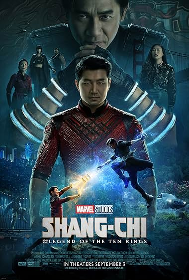
《尚气》（2021）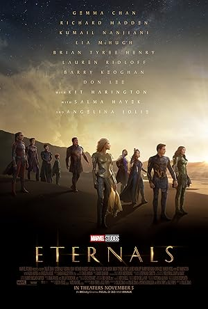
《永恒族》（2021）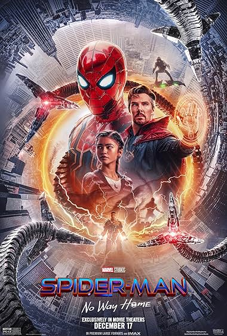
《蜘蛛侠：英雄无归》（2021）· 三代蜘蛛侠同框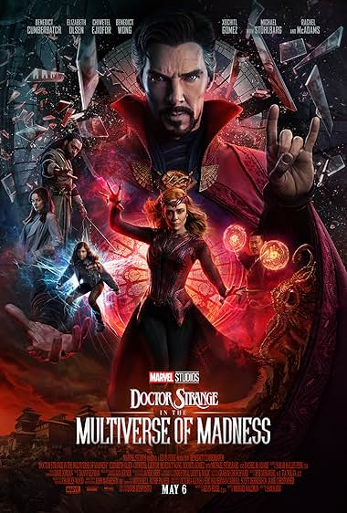
《奇异博士2：疯狂多元宇宙》（2022）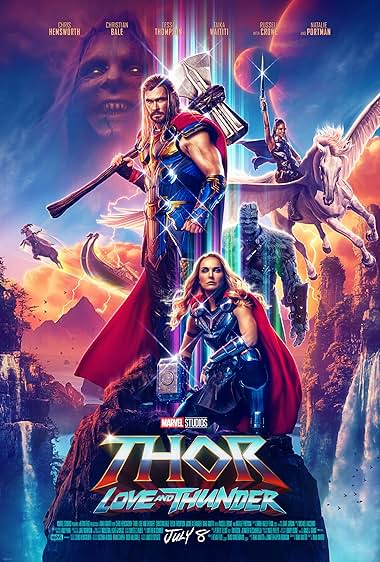
《雷神4：爱与雷霆》（2022）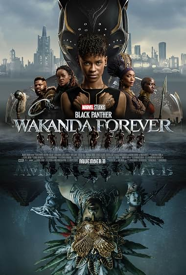
《黑豹2：瓦坎达万岁》（2022）
第五阶段 · 康之王朝
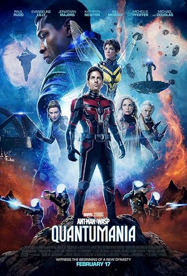
《蚁人3：量子狂潮》（2023）· 康登场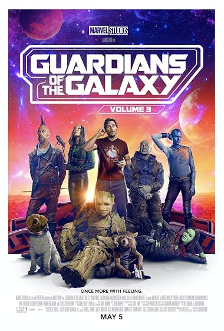
《银河护卫队3》（2023）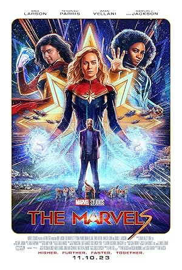
《惊奇队长2》（2023）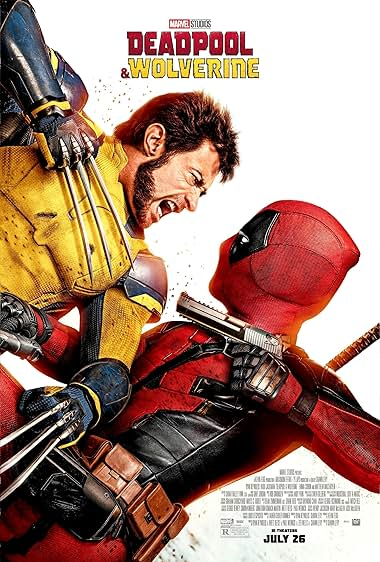
《死侍与金刚狼》（2024）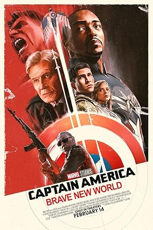
《美国队长4：美丽新世界》（2025）
💡 观影提示：以上顺序为剧情时间线，首次观看也可按上映顺序体验，彩蛋和惊喜更完整。
🦸 核心超级英雄档案
MCU主要角色设定、性格与能力解析
钢铁侠 / 托尼·斯塔克
首次登场：《钢铁侠》（2008）
演员：小罗伯特·唐尼
性格：天才、自恋、嘴硬心软、责任感强、自我牺牲精神
核心能力：天才级智商、纳米战甲、飞行、激光武器、AI辅助（贾维斯/星期五）
弱点：PTSD、焦虑症、凡人之躯
经典台词："I am Iron Man." / "爱你三千遍"
美国队长 / 史蒂夫·罗杰斯
首次登场：《美国队长1》（2011）
演员：克里斯·埃文斯
性格：正直、领导力、坚持原则、老派绅士、团队核心
核心能力：超级士兵血清、振金盾牌、格斗大师、战术指挥
弱点：过于理想主义、时代脱节感
经典台词："I can do this all day." / "复仇者，集结！"
雷神 / 索尔
首次登场：《雷神》（2011）
演员：克里斯·海姆斯沃斯
性格：豪爽、鲁莽、幽默、重情义、成长型英雄
核心能力：雷神之锤/风暴战斧、雷电操控、阿斯加德之力、长生不老
弱点：傲慢、家庭创伤、情感脆弱
经典台词："Bring me Thanos!" / "For Asgard!"

绿巨人 / 布鲁斯·班纳
首次登场：《无敌浩克》（2008）
演员：马克·鲁法洛
性格：温和、内向、天才科学家、自我压抑、团队智囊
核心能力：无限力量、超强耐力、再生能力、天才级核物理学家
弱点：情绪失控、浩克人格难以控制
经典台词："Hulk... SMASH!" / "That's my secret, Cap. I'm always angry."
黑寡妇 / 娜塔莎·罗曼诺夫
首次登场：《钢铁侠2》（2010）
演员：斯嘉丽·约翰逊
性格：冷静、精明、间谍本能、情感内敛、团队粘合剂
核心能力：顶尖格斗、间谍技巧、黑客技术、多语言、战术制定
弱点：普通人身体素质、过往黑历史
经典台词："I have red in my ledger." / "See you in a minute."
鹰眼 / 克林特·巴顿
首次登场：《雷神》（2011）客串
演员：杰瑞米·雷纳
性格：务实、低调、顾家好男人、导师型
核心能力：百发百中、箭术大师、近身格斗、战术配合
弱点：普通人、听力障碍
经典台词："You walk out that door, you are an Avenger."
蜘蛛侠 / 彼得·帕克
首次登场：《美国队长3》（2016）
演员：汤姆·赫兰德
性格：话痨、少年感、善良、成长中、渴望认可
核心能力：蜘蛛感应、超强力量、爬墙、蛛网发射器、天才发明家
弱点：年轻经验不足、责任重大
经典台词："With great power comes great responsibility."
奇异博士 / 史蒂芬·斯特兰奇
首次登场：《奇异博士》（2016）
演员：本尼迪克特·康伯巴奇
性格：傲慢、理性、牺牲精神、时间守护者
核心能力：时间宝石、镜像维度、传送门、魔法、预知未来
弱点：双手曾残废、魔法有代价
经典台词："Dormammu, I've come to bargain!" / "We're in the endgame now."
黑豹 / 特查拉
首次登场：《美国队长3》（2016）
演员：查德维克·博斯曼
性格：沉稳、智慧、王者风范、责任感强
核心能力：心形草强化、振金战衣、瓦坎达科技、格斗大师
弱点：国王身份束缚
经典台词："Wakanda Forever!"
绯红女巫 / 旺达·马克西莫夫
首次登场：《复仇者联盟2》（2015）
演员：伊丽莎白·奥尔森
性格：情感丰富、母性、创伤深重、力量失控风险
核心能力：混沌魔法、现实扭曲、心灵操控、超强破坏力
弱点：情绪不稳定、力量难以控制
经典台词："You break the rules and become a hero. I do it and I become the enemy."
惊奇队长 / 卡罗尔·丹弗斯
首次登场：《惊奇队长》（2019）
演员：布丽·拉尔森
性格：自信、独立、宇宙守护者、战士精神
核心能力：宇宙能量、光速飞行、超强力量、能量吸收
弱点：记忆曾被篡改、长期不在地球
经典台词："I've been fighting with one arm tied behind my back."
星爵 / 彼得·奎尔
首次登场：《银河护卫队》（2014）
演员：克里斯·帕拉特
性格：玩世不恭、幽默、感性、80年代流行文化迷
核心能力：战术头脑、元素枪、喷气靴、半神血统（已觉醒）
弱点：冲动、情感用事
经典台词："I am Star-Lord!" / "Hooked on a Feeling~"
😈 主要反派档案
灭霸 / Thanos
登场：《复仇者联盟3/四》（2018-2019）
演员：乔什·布洛林
动机：宇宙资源有限，需消灭一半生命维持平衡
能力：泰坦星人力量、无限手套、战略天才
特点：坚定的"理想主义者"、强大且悲情
奥创 / Ultron
登场：《复仇者联盟2》（2015）
配音：詹姆斯·斯派德
动机：人类是地球威胁，必须被消灭
能力：人工智能、机械大军、自我复制、网络入侵
特点：托尼和班纳的"错误产物"，讽刺意味浓
红骷髅 / Red Skull
登场：《美国队长1》（2011）
演员：雨果·维文
身份：九头蛇首领，美国队长的宿敌
能力：战术天才、超凡意志、宇宙魔方知识
纳摩 / Namor
登场：《黑豹2》（2022）
演员：泰诺克·乌尔塔
身份：塔罗肯国王，海底变种人
能力：飞行、超强力量、水下生存
特点：反英雄，亦敌亦友
💡 新手观影建议
🎯 最快入门路径
时间紧张？先看核心三部曲：
- 《复仇者联盟》（2012）
- 《复仇者联盟3：无限战争》（2018）
- 《复仇者联盟4：终局之战》（2019）
看完这三部，理解80%剧情主线
📺 必看剧集推荐
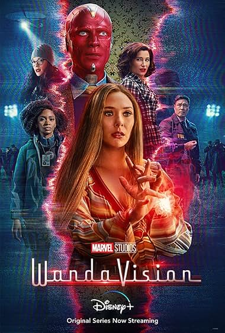
《旺达幻视》（2021）- 绯红女巫关键剧情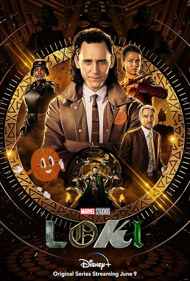
《洛基》（2021）- 多元宇宙设定铺垫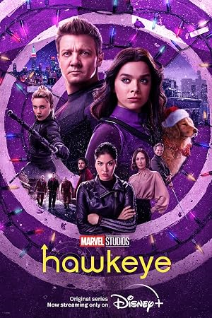
《鹰眼》（2021）- 接棒传承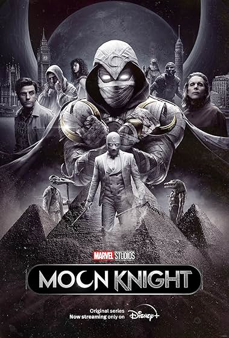
《月光骑士》（2022）- 新英雄登场
🎫 彩蛋观看技巧
- 每部电影片尾必有彩蛋（有的两段）
- 不要提前离场，等字幕完全结束
- 彩蛋常暗示下一部电影或新角色
- 斯坦·李客串是传统（2018年去世后结束）